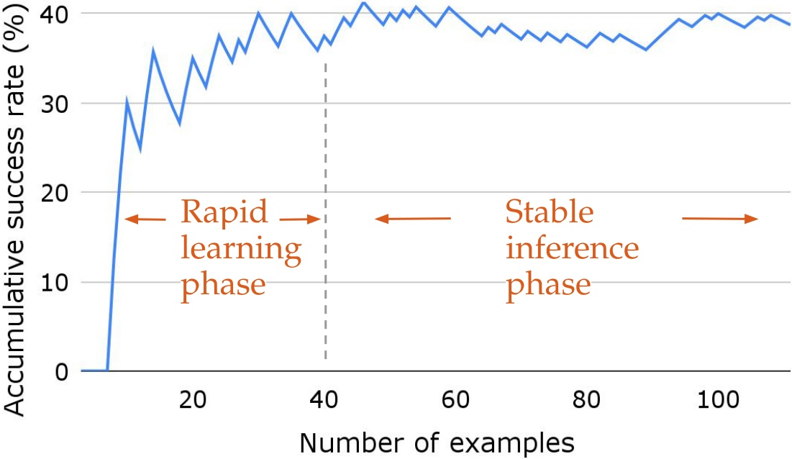

웹 에이전트는 왜 비슷한 일을 계속 새로 배울까
흐름: 웹 태스크의 장기 의존성 → 예시 중심 에이전트의 한계 → workflow abstraction이라는 문제 재정의
예시를 많이 본다고 해서 루틴을 배우는 건 아니다
이 논문의 출발점은 단순하다. 웹 에이전트는 비슷한 태스크를 수없이 만나도, 그 안에 반복되는 "루틴"을 별도 단위로 잘 뽑아내지 못한다.
웹 에이전트는 검색창을 찾고, 입력하고, 결과를 읽고, 필터를 적용하고, 상세 페이지로 들어가는 일을 계속 반복한다. 그런데 대부분의 기존 방법은 이 과정을 독립된 trajectory나 training example로만 본다. 즉 "이 예제를 맞혔다"는 사실은 남지만, 그 안에서 재사용 가능한 sub-routine이 무엇이었는지는 별도로 남지 않는다.
논문은 이 점을 아주 직접적으로 짚는다.
"Current agents mostly integrate a fixed set of given examples ... but results in a lack of robustness to changes in task contexts or environments."
예시 기반 에이전트가 잘하는 건 본 적 있는 패턴을 비슷하게 따라가는 일이다. 하지만 조금만 맥락이 바뀌면 약해진다. Amazon에서 상품 검색과 다른 쇼핑몰에서 상품 검색은 표면은 다르지만 구조는 비슷한데, 예시를 통째로 기억하는 시스템은 이 둘을 같은 subtask family로 보기 어렵다.
이 논문이 저장하려는 것은 trajectory가 아니라 workflow다
AWM이 제안하는 단위는 "태스크 전체 해법"이 아니라, 여러 태스크에 반복해서 등장하는 sub-routine이다.
예를 들어 아래 같은 것들이다.
- 장소 이름으로 장소 찾기
- 검색 결과에서 특정 항목 고르기
- 상품을 검색하고 정렬하기
- 입력 필드를 채운 뒤 제출하기
이런 루틴은 완전한 task보다 더 작고, primitive action보다 더 크다. 그래서 다른 태스크에 옮겨가기 쉽다. 논문이 말하는 workflow는 바로 이 중간 추상화 수준을 노린다.
"To build agents that can similarly benefit from this process, we introduce Agent Workflow Memory, a method for inducing commonly reused routines, i.e., workflows."
AWM 한눈에 보기
흐름: 경험 수집 → workflow induction → memory integration → 이후 태스크에서 재사용
한 번 푼 trajectory에서 반복 가능한 루틴만 뽑아낸다
AWM의 핵심은 성공 trajectory를 그대로 저장하지 않고, 그 안에서 여러 태스크에 재사용 가능한 sub-routine만 잘라내는 데 있다.
하나의 experience는 자연어 instruction과 action trajectory로 구성된다. AWM의 induction module은 이 experience 여러 개를 읽고, 그 안에 반복되는 공통 절차를 workflow로 추출한다. 이 workflow는 단순 action sequence가 아니다. 두 요소를 함께 가진다.
- workflow description: 이 workflow가 무슨 일을 하는지 설명하는 자연어 요약
- workflow trajectory: 상태 설명, reasoning, action으로 이루어진 step sequence
즉 workflow는 "무슨 상황에서, 어떤 목표를 위해, 어떤 순서로 행동하는가"를 함께 담은 reusable memory item이다.

예시 특유의 세부값은 버리고, 더 일반적인 슬롯으로 바꾼다
AWM이 workflow를 유용하게 만드는 핵심 트릭은 concrete context를 abstract slot으로 바꾸는 것이다.
논문은 "dry cat food를 Amazon에서 사라" 같은 구체 instruction에서 그대로 루틴을 뽑지 않는다. 대신 {product-name}처럼 변수화된 형태로 바꿔서, 더 넓은 범위의 태스크에 재사용 가능한 workflow를 만든다. 또한 task 전체를 그대로 저장하는 대신, 더 자주 다시 나타나는 finer-grained sub-task를 의도적으로 뽑아낸다.
"We deliberately prompt models to induce workflows at finer granularities ... a sub-task 'search for a product on Amazon' that frequently re-appears as part of multiple similar instructions."
이 부분이 중요하다. AWM은 memory를 "정답 예시 저장소"가 아니라 "업무 절차 라이브러리"처럼 다룬다.
Offline AWM과 Online AWM
흐름: 추가 예시가 있을 때의 offline → test stream만 있을 때의 online → 두 설정의 성격 차이
Offline AWM: 훈련 전에 workflow를 먼저 만든다
추가 canonical example이 있으면, AWM은 그 예시 전체를 미리 읽고 workflow repository를 구성한 뒤 test-time에 가져다 쓴다.
이 설정에서는 workflow induction과 workflow use가 분리된다. 먼저 training example에서 workflow를 다 만든다. 그 다음 test-time에는 같은 workflow memory를 모든 테스트에 공통 가이드로 넣는다.
이 방식의 장점은 workflow 품질이 상대적으로 안정적이라는 점이다. 인간 주석이나 잘 정제된 canonical example이 있으면 induction 품질이 높아진다. 단점은 train-test distribution gap이 생기면 workflow가 조금 덜 맞을 수 있다는 것이다.

Online AWM: 테스트를 풀면서 workflow를 배운다
이 논문이 더 흥미로운 지점은, canonical example이 없어도 test stream만으로 workflow memory를 계속 키울 수 있다는 점이다.
Online AWM은 테스트 쿼리를 스트리밍으로 처리한다. 현재 task를 풀고, evaluator가 이 trajectory가 성공했다고 판단하면, 그 trajectory에서 새 workflow를 유도해 memory에 추가한다. 그리고 다음 task부터는 그 memory가 guidance로 쓰인다.
즉 AWM은 단순 retrieval memory가 아니라, test-time에 실제로 자라나는 memory다.
"Agents with AWM_online process test queries in a streaming fashion, where the agents conduct the loop of induce, integrate, and utilize workflows after running inference for each test task."

이 방식이 왜 잘 되나
흐름: sub-routine memory의 장점 → 빠른 초기 학습 → 복잡한 workflow로의 조합 → cross-template generalization
AWM은 작은 수의 예시로도 빠르게 올라간다
논문이 보여주는 첫 번째 강한 메시지는, workflow memory가 쌓이기 시작하는 초반 구간에서 성능이 매우 빠르게 오른다는 점이다.
WebArena map split에서 online AWM의 cumulative success rate는 초반 몇십 개 example만으로 빠르게 올라간다. 논문은 이를 "rapid learning phase"라고 부른다. 이유는 명확하다. 초기에 가장 자주 쓰이는 핵심 workflow 몇 개만 확보해도, 이후 많은 태스크의 시행착오를 크게 줄일 수 있기 때문이다.

workflow는 더 큰 workflow의 재료가 된다
이 논문의 가장 매력적인 아이디어는, workflow가 최종 산출물이 아니라 다음 workflow를 만드는 부품이 된다는 것이다.
처음에는 Find a place by its name 같은 비교적 단순한 workflow를 배운다. 이후 더 복잡한 태스크를 만나면, 에이전트는 그 workflow의 앞부분을 재사용하고 거기에 새로운 steps를 덧붙여 Get the zip code of a place 같은 더 복잡한 workflow를 만든다.
이 구조 덕분에 memory는 flat하게 늘어나는 게 아니라 compositional하게 자란다.

그래서 cross-task generalization이 가능해진다
AWM의 일반화는 단순히 같은 템플릿을 재현해서가 아니라, 템플릿을 넘어서는 sub-routine level transfer에서 나온다.
논문은 WebArena에서 cross-template subset을 따로 만들어 검증한다. 즉 비슷한 canonical trajectory를 공유하는 예제끼리의 쉬운 일반화를 제거한 뒤에도 성능 이득이 유지되는지 본다. 결과는 꽤 강하다. AWM은 이 subset에서도 전체 최고 성능을 낸다.
이건 AWM이 단순 memorization보다 더 높은 수준의 reusable structure를 잡았다는 강한 증거다.
실험 결과
흐름: WebArena 성능 → Mind2Web 성능 → unseen website/domain generalization
WebArena에서는 published baseline을 크게 넘는다
WebArena에서 AWM은 당시 autonomous baseline을 크게 뛰어넘고, human-written workflow를 쓰는 SteP와도 정면으로 경쟁한다.
| 방법 | Total SR | # Steps |
|---|---|---|
| SteP (human workflows) | 33.0 | - |
| AutoEval | 20.2 | 46.7 |
| BrowserGym | 23.5 | - |
| BrowserGym ax-tree | 15.0 | 7.9 |
| AWM | 35.5 | 5.9 |
숫자만 봐도 해석은 분명하다.
- BrowserGym 대비 +12.0 absolute point
- SteP보다도 약간 높음
- 평균 step은 BrowserGym ax-tree보다 2.0 적음
즉 AWM은 더 잘 맞히면서도 더 짧은 경로로 푼다. workflow memory가 긴 horizon task에서 경로 선택 자체를 더 직접적으로 만들어준다는 뜻이다.
Mind2Web에서는 trajectory exemplar보다 workflow abstraction이 더 강하다
Mind2Web 결과가 특히 흥미로운 이유는, Synapse처럼 관련 example trajectory를 retrieval하는 방식보다 AWM의 abstract workflow가 더 잘 작동한다는 점이다.
논문은 여기서 두 가지를 강조한다.
- element accuracy 상승폭이 특히 크다
- full example보다 abstract sub-routine이 덜 편향적이다
| 방법 | Elem Acc | Action F1 | Step SR | Task SR |
|---|---|---|---|---|
| Synapse 3.5 | 34.0 | - | 30.6 | 2.4 |
| AWM 3.5 | 39.0 | 52.8 | 34.6 | 2.8 |
| MindAct 4 | 41.6 | 60.6 | 36.2 | 2.0 |
| AWM 4 | 50.6 | 57.3 | 45.1 | 4.8 |
여기서 특히 눈여겨볼 건 Synapse 대비 AWM 3.5의 Elem Acc +5.0, Step SR +4.0입니다. 논문 해석대로라면, full example retrieval은 현재 페이지에서 비슷하게 생긴 요소를 과도하게 따라가게 만들 수 있지만, workflow는 더 일반적인 절차만 남겨 element selection bias를 줄입니다.
online AWM은 unseen website와 domain에서 더 강하다
offline workflow가 잘 정제된 절차라면, online workflow는 test distribution에 직접 적응한다는 점에서 더 강하다.
Mind2Web의 cross-website, cross-domain 설정에서 online AWM이 offline AWM보다 더 좋은 결과를 보입니다. 이유는 단순합니다. online 방식은 training workflow에 묶이지 않고, test stream에서 바로 새 workflow를 만들어 쓰기 때문입니다.
즉 AWM은 memory를 단지 precompute된 힌트 모음이 아니라, deployment 중 자라는 adaptation mechanism으로 쓴다.
이 논문에서 가장 흥미로운 지점
흐름: workflow vs raw example → offline/online trade-off → action-space 확장 실험의 함의
ReasoningBank나 SkillRL과 닮았지만, 중간 표현이 다르다
ReasoningBank가 reasoning strategy를 저장하고, SkillRL이 skill을 저장한다면, AWM은 workflow를 저장한다.
세 논문은 모두 "trajectory를 그대로 저장하는 건 비효율적"이라는 직관을 공유한다. 차이는 어떤 intermediate representation을 선택하느냐에 있다.
- ReasoningBank: higher-level reasoning hint
- SkillRL: reusable skill with when-to-apply logic
- AWM: executable sub-routine에 가까운 workflow
AWM은 그중에서도 웹 탐색처럼 반복적인 UI 루틴이 많은 환경에 특히 잘 맞는다. 검색, 필터, 정렬, 제출, 상세 페이지 이동 같은 패턴이 실제로 자주 재사용되기 때문이다.
workflow를 action으로 승격하는 건 생각만큼 쉽지 않다
이 논문이 솔직해서 좋은 이유 중 하나는, workflow를 memory로 쓰는 것과 action으로 쓰는 것을 분리해 실험하고, 후자는 생각보다 어렵다고 인정한다는 점이다.
논문은 AWM_AS라는 변형도 실험한다. workflow를 고수준 action처럼 직접 호출하게 만드는 방식이다. step success rate는 약간 오르지만, task success rate는 오히려 memory-only AWM보다 반드시 좋지 않다. 이유는 동적 환경 변화 때문이다. 예를 들어 항공편 예약 중 팝업 옵션처럼 intermediate state를 봐야 하는 경우, 미리 정해진 workflow action sequence는 유연성이 부족하다.
이 결과는 꽤 중요하다. 현재 단계에서 workflow의 가장 자연스러운 위치는 "행동을 대신 실행하는 macro action"보다 "현재 행동을 안내하는 memory"라는 뜻이기 때문이다.
어떻게 읽으면 좋을까
흐름: 핵심 기여 요약 → 강점 → 한계
AWM의 핵심 기여
이 논문은 웹 에이전트 memory를 example retrieval에서 workflow retrieval로 옮긴다.
핵심 기여를 요약하면 세 가지입니다.
- 반복되는 웹 sub-routine을 workflow라는 중간 표현으로 추상화한다.
- canonical example이 있을 때의 offline 설정과, test stream만 있을 때의 online 설정을 모두 제시한다.
- workflow가 더 복잡한 workflow의 재료가 되면서 memory가 compositional하게 자랄 수 있음을 보인다.
특히 마지막 점이 이 논문을 그냥 "또 하나의 memory paper" 이상으로 만든다. AWM은 경험을 저장하는 데서 끝나지 않고, 더 큰 루틴을 만드는 발판으로 쓴다.
남는 질문
다만 evaluator가 성공이라고 판정한 trajectory만 online workflow로 올린다는 점은, false positive/false negative에 꽤 민감할 수 있다.
또 workflow가 현재는 주로 웹 navigation처럼 반복 절차가 뚜렷한 환경에서 강한데, 더 open-ended한 computer-use 환경이나 reasoning-heavy software agent 환경에서도 같은 중간 표현이 충분할지는 아직 열려 있다.
그럼에도 불구하고 AWM은 지금 봐도 꽤 좋은 논문입니다. 특히 web agent 문맥에서는 "memory는 무엇을 저장해야 하는가?"에 대한 가장 실용적인 답 중 하나를 줍니다. trajectory 전체도, 한 줄 교훈도 아닌, 여러 태스크에 반복해서 등장하는 루틴을 저장하라는 답입니다.